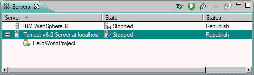

The Servers view (similar to the one shown below) allows you to manage the servers. This view displays a list of all your servers and configurations that are associated with that server. You can use this view to start, start in debug mode, restart, or stop the servers.

Use the Servers view to perform the following tasks:
The Servers view displays the current status of all the servers. The Status column indicates whether or not a server has been started. The following lists the possible server status:
The Servers view also displays the current state of all the servers. Depending on the status of the server and the preference options that are selected for that particular server, the workbench determines the server actions that may be taken. Use the State column as an indicator for possible actions that you may want to take. For example, if the workbench detects that a file defined to run on a particular server has changed, and the Automatically restart servers when necessary check box has been selected on the Server preferences page ( Window > Preferences > Server > Launching), the server tools automatically restart that server. The Status column in the Servers view changes from Started to Stopped to Started. However, if this check box is not selected, the State column in the Servers view changes to Republish.
The following table lists the possible server states:
| Server states | Description of states |
|---|---|
| Synchronized | Both the server and the applications are in synch. |
| Publishing | Files (projects, resource files, and server configurations) are copied to the correct location for the server to find and use them. |
| Restart | The server needs to be restarted in order for the changes to take place. |
| Republish | Either the server or the applications or both have changed. The changed files need to be republished. |
| Restart and republish | Either the server or the applications or both have changed. When the server is restarted, the changed files are also republished. |